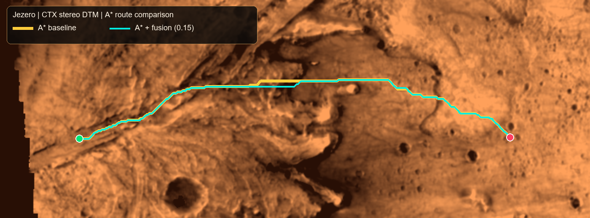

INDEPENDENT HAZARD REVIEW
Review the Jezero CTX image
Mark areas from the image only. Model predictions and terrain-derived weak labels are hidden on this page.
Loading CTX image…
Move over the image to read coordinates
Draw: select a label, choose Draw polygon, then click around an area; double-click or Finish to save it.
Navigate: wheel to zoom; drag to pan when not drawing.
ROUTE COMPARISON
Same start and destination
Yellow is baseline A*. Cyan is A* with the experimental image/terrain cost at the current UI weight. A changed path shows cost sensitivity; it does not by itself prove improved safety.

Route comparison metadata is loading.